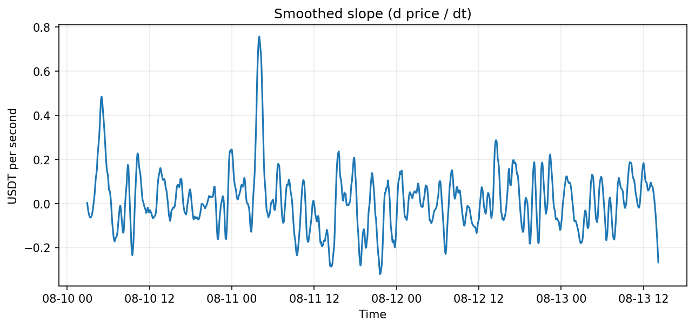
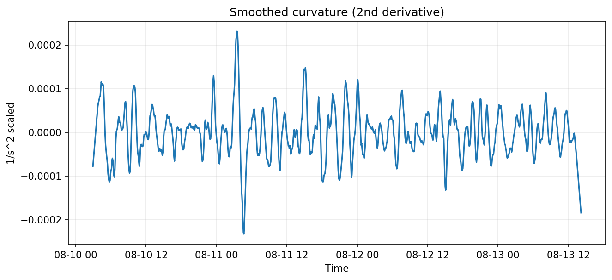
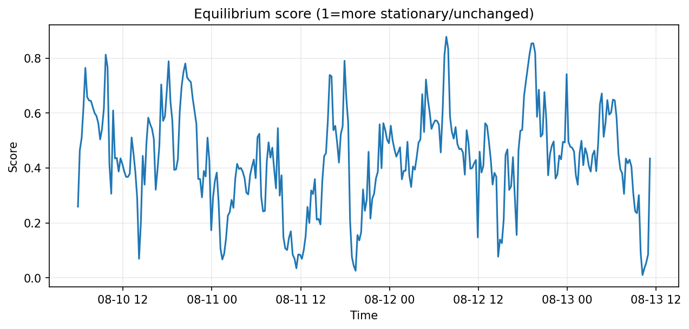

Lines, Curves & Equilibrium: smoothing noisy BTC data
A quick exploration of rolling means, Savitzky–Golay, and a playful “equilibrium” check inspired by PyMBAR to see when the series behaves like a stationary process.
Raw vs smoothed
Rolling averages (1h window) vs Savitzky–Golay (w=21, p=3). SG preserves local structure and gives analytic derivatives.

Derivatives
 Equilibrium score
We combine a KS distance between adjacent windows with an ADF stationarity score. Higher values suggest a more “equilibrium-like” regime.
We compare simple rolling averages vs Savitzky–Golay. The latter preserves shape better and provides analytic derivatives cheaply.
Equilibrium idea
Treat sliding windows as “states.” If adjacent windows have statistically compatible distributions (within error bars), we call that “equilibrium.” Divergence → non-equilibrium regime.
Takeaways
- Smoothing highlights local trend and curvature without (necessarily) overfitting.
- Stationarity breaks often precede larger moves — useful for regime detection, not prediction.
- Same ideas map to lab time-series (e.g., MD observables, sensor drift).
Notebook & code (soon): GitHub